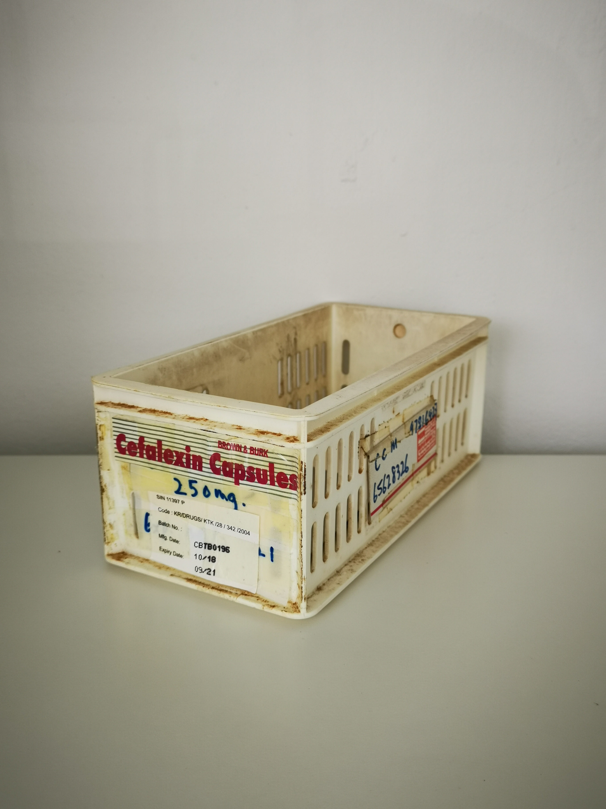

Learn key considerations for ordering Gouri for clinics, including supplier evaluation, logistics, and buyer checklists.
When it comes to sourcing Gouri for clinics, professional buyers face a unique set of challenges. The growing demand for biostimulators in aesthetic practices means that clinics, spas, and resellers must navigate a crowded marketplace filled with various suppliers and products. Understanding what to check before placing an order is crucial for ensuring quality and compliance.
This guide aims to equip professional buyers with the knowledge they need to make informed decisions when sourcing Gouri. By focusing on key factors such as supplier reliability, product specifications, and logistics, you can streamline your procurement process and enhance the quality of your offerings.
Key Takeaways
- Evaluate the supplier's reputation and experience in the biostimulator market.
- Understand the product specifications and ensure they meet your clinic's needs.
- Check for clear documentation regarding batch numbers and expiry dates.
- Communicate your shipping and packing requirements upfront to avoid delays.
- Plan your minimum order quantities (MOQ) and reorder schedules effectively.
What this guide covers
- Understanding Gouri and its applications
- Identifying relevant buyers
- Comparison criteria for suppliers
- Checklist for requesting quotes
- Logistics and documentation considerations
- MOQ and reorder planning
What buyers should understand first
Gouri is a biostimulator used in aesthetic practices to enhance skin quality and promote rejuvenation. It is essential for clinics and spas to understand the product's characteristics, including its formulation and intended use, to ensure they meet their clients' needs. As a professional buyer, you should focus on sourcing Gouri that is compliant with local regulations and standards, ensuring that the product is safe and effective for your clientele.
Understanding the nuances of Gouri, including its composition and the science behind its efficacy, can significantly impact your procurement decisions. This knowledge not only helps in selecting the right product but also in communicating its benefits to your clients, thereby enhancing their trust in your services.
Which buyers is this most relevant for?
This guide is particularly relevant for clinics, spas, resellers, and distributors looking to incorporate Gouri into their offerings. Each type of buyer may have different order planning needs. For instance, clinics may require smaller, more frequent orders to maintain stock, while larger spas or resellers might focus on bulk purchasing to optimize costs. Understanding these scenarios can help you tailor your procurement strategy effectively.
For clinics, the focus might be on ensuring a steady supply of Gouri to meet patient demand without overstocking. Resellers, on the other hand, may prioritize negotiating favorable terms for bulk purchases to maximize their profit margins. Distributors must consider logistics and storage capabilities, as they often handle larger quantities and multiple product lines.
How to compare options before ordering
When evaluating potential suppliers for Gouri, consider the following criteria:
- Product Type: Ensure the Gouri you are sourcing aligns with your clinic's treatment protocols.
- Brand Reputation: Research the supplier's history and reviews from other buyers.
- Packaging: Check if the packaging meets your clinic's standards for safety and presentation.
- Batch/Expiry Visibility: Confirm that the supplier provides clear information on batch numbers and expiry dates.
- Supplier Communication: Assess how responsive and informative the supplier is during the inquiry process.
- Destination Requirements: Understand any specific shipping or customs requirements for your location.
- Pricing Structure: Compare pricing across different suppliers to ensure you are getting the best deal without compromising quality.
Buyer checklist before requesting a quote

- Define your required quantities and variants of Gouri.
- Verify the supplier's certifications and compliance with local regulations.
- Request documentation for product specifications and safety data.
- Clarify shipping options and costs based on your location.
- Confirm the supplier's MOQ and potential for reorder flexibility.
- Assess the supplier's return policy in case of discrepancies.
- Inquire about the supplier's customer support and after-sales service.
Shipping, packing and documentation questions
Logistics play a critical role in the procurement process. Here are some realistic questions to consider:
- What are the shipping options available, and how do they affect delivery times?
- How will the products be packed to ensure they arrive safely?
- What documentation will be provided for customs clearance?
- Are there any specific handling instructions for Gouri during transit?
- What are the costs associated with shipping, and how do they impact your overall budget?
- Will the supplier provide tracking information for your order?
MOQ, quotation and reorder planning
Understanding your minimum order quantities (MOQ) is essential for effective procurement. When preparing to request a quote, consider the following:
- Determine the quantities you need based on your clinic's demand and client base.
- Identify any variants of Gouri you wish to order, such as different formulations or sizes.
- Provide clear details about your destination to ensure accurate shipping quotes.
- Contact SOLA to confirm current availability and request a wholesale quotation.
- Plan for potential fluctuations in demand and how that may affect your reorder schedule.
FAQ
What is Gouri used for?
Gouri is primarily used in aesthetic treatments to improve skin quality and promote rejuvenation.
How do I choose a reliable supplier?
Look for suppliers with a strong reputation, positive reviews, and clear documentation regarding their products.
What should I include in my quote request?
Include details about required quantities, product specifications, shipping needs, and any compliance documentation.
What are the common shipping options for Gouri?
Shipping options may vary by supplier but typically include standard and expedited services.
How can I ensure product quality?
Request documentation such as batch numbers, expiry dates, and safety data sheets from your supplier.
Contact SOLA for wholesale quotation via WhatsApp.
Planning a wholesale request?
Send product names, quantities and destination for a tailored discussion.
Contact SOLA on WhatsApp →General educational content for professional buyers. Not medical, legal, regulatory or import advice.
Image sources: Modern medical office interior design.jpg by Shixart1985 (CC BY 2.0, 6016x4016 px); Bright and modern beauty treatment room.jpg by Shixart1985 (CC BY 2.0, 5449x3637 px); Medicine storage container 01.jpg by Wikimedia Commons contributor (CC0, 2736x3648 px); Sorting medical supplies (8549923).jpg by U.S. Army AMLC by C.J. Lovelace (Public domain, 2250x1567 px).